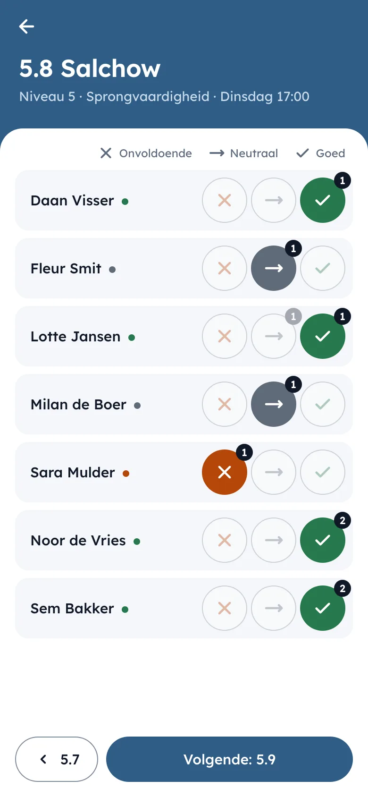
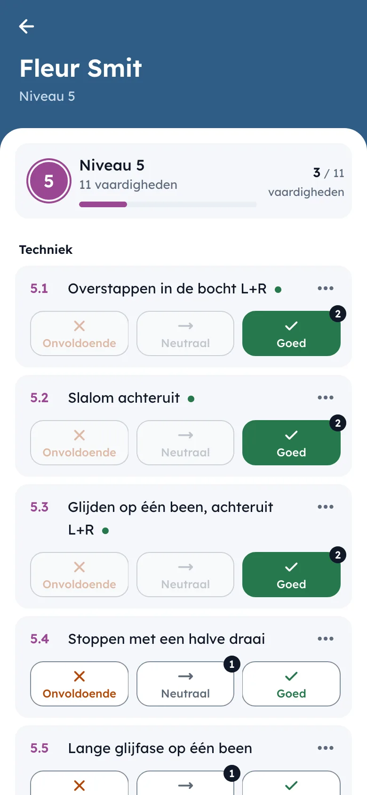
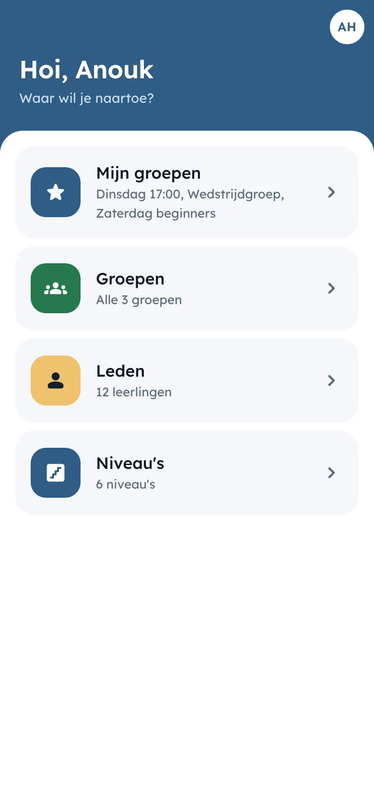
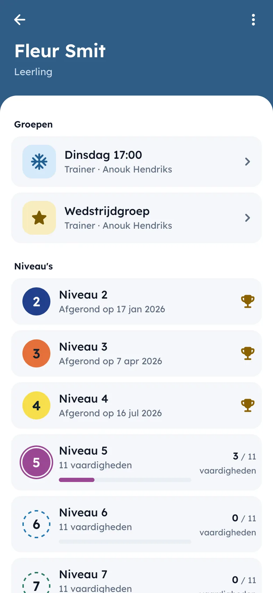
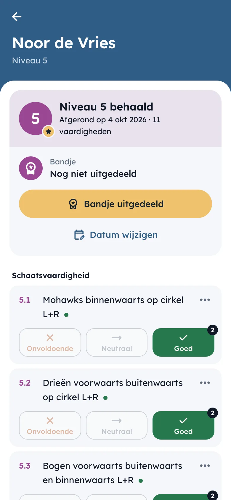

Tijdens de les
Beoordelen kost één tik
Op de training heb je geen tijd voor formulieren. Je kiest een vaardigheid, ziet je hele groep onder elkaar en tikt per leerling onvoldoende, neutraal of goed aan. Het wordt meteen opgeslagen. Tik je mis, dan zet je het met de melding onderaan direct terug.
Wil je liever één leerling helemaal doorlopen, bijvoorbeeld aan het eind van het seizoen, dan zie je alle vaardigheden van zijn of haar niveau bij elkaar.
Stride werkt gewoon in de browser van je telefoon, dus er hoeft niets geïnstalleerd te worden. De knoppen zijn groot genoeg voor koude vingers en de tekst blijft leesbaar in fel licht.



Niveaus en bandjes
De voortgang hoort bij de leerling
Elke club bepaalt zelf welke niveaus en vaardigheden er zijn, en wanneer een niveau als behaald telt. Stride houdt de beoordelingen bij en laat zien wie een niveau heeft afgerond. Is het bandje uitgereikt, dan leg je dat ook meteen vast.
Leerlingen wisselen nog weleens van groep of trainer. Hun beoordelingen gaan dan gewoon mee: wat een leerling kan, hoort bij de leerling en niet bij de groep.
Trainers loggen in met hun clubaccount. Beheerders bepalen wie groepen en leden mag aanpassen, en wie de bandjes en datums beheert.


In gebruik
Elke week op het ijs
DIJC
Kunstschaatsen
De trainers van kunstschaatsclub DIJC houden hun lessen bij in Stride, bij hen onder de naam IJsvrij. Elke club krijgt zo een eigen adres en eigen naam. De app past net zo goed bij andere sporten die met niveaus werken, zoals zwemles of turnen.
Past Stride bij jouw club?
Stuur ons een mail over je club en hoe jullie nu met niveaus werken. We laten je graag zien hoe Stride eruitziet.
Mail ons